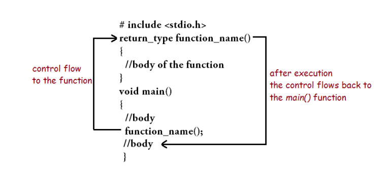

A function is a group of statements that together perform a task. Every C program has at least one function, which is main(), and all the most trivial programs can define additional functions.
In c, we can divide a large program into the basic building blocks known as function. The function contains the set of programming statements enclosed by {}. A function can be called multiple times to provide reusability and modularity to the C program. In other words, we can say that the collection of functions creates a program. The function is also known as procedureor subroutinein other programming languages.
There are the following advantages of C functions.
There are three aspects of a C function.
Apart from the functions that programmers create according to their requirement, C compilers has some built-in functions that can be used anytime by the programmer. C Programming Language has two types of functions:
Library functions are the inbuilt function in C that are grouped and placed at a common place called the library. Such functions are used to perform some specific operations. For example, printf is a library function used to print on the console. The library functions are created by the designers of compilers. All C standard library functions are defined inside the different header files saved with the extension .h. We need to include these header files in our program to make use of the library functions defined in such header files. For example, To use the library functions such as printf/scanf we need to include stdio.h in our program which is a header file that contains all the library functions regarding standard input/output.
There functions are already defined in the C compilers. They are used for String handling, I/O operations, etc. These functions are defined in the header file. To use these functions we need to import the specific header files.
The library function
The library function
User-defined functions are the ones created by the user. The user can program it to perform any desired function.It is like customizing the functions that we need in a program. A program can have more than one user-defined functions. All the user-defined functions need to be called(directly or indirectly) inside the main() function in order to be executed.
Any function has 4 building blocks to be declared –
The function that calls other functions in its body(usually main() function) are known as calling functions and the functions that get called are known as the called functions.
This is a two-way communication process that involves sending arguments to the called function and then returning values from the called function to the calling function. Even if we do not have to return anything then we void as the return type. The figure below illustrates the control flow for functions:

Defining the type of the function is important for creating a function. A function declaration specifies
It is usually done at the top of the program and indicates how the function shall be called. The actual function definition can be present anywhere in the program. Here is how it looks:
Here’s an example of a function declaration with integer return type and area as function name.
int area(int,int);
The function definition consists of the function body along with the return type, function name and its parameters. Here is how it looks like:
return_type function_name(parameter) {
//body of the function
}
The body of the function contains a list of statements that gets executed once the function is being called. This is known as the called function and after execution of the called function the control goes back to the calling function.
The function parameter contains the arguments that are passed by the calling function. They are placed within a pair of parenthesis and can have any number of arguments separated by commas. Every parameter has a specific datatype and it accepts only those values which can be assigned to that datatype. A function may or may not have a parameter. A function with no parameter is defined as follows:
void sum() {
//body of the function
}
In C Programming language, there are two types of function parameters:
The formal and actual parameters are shown below:
int sum(int,int);
void main()
{
int a ,b ;
//body of main
sum(a ,b );//actual parameter
}
int sum(int x, int y)//formal parameter
{
//body of the function
}
A function may or may not accept any argument. It may or may not return any value. Based on these facts, There are four different aspects of function calls.
#include <stdio.h>
void printName();
void main ()
{
printf("Hello ");
printName();
}
void printName()
{
printf("IT GEEK HUB");
}
output :
Hello IT GEEK HUB
#include <stdio.h>
int sum();
void main()
{
int result;
printf("\nGoing to calculate the sum of two numbers:");
result = sum();
printf("%d",result);
}
int sum()
{
int a,b;
printf("\nEnter two numbers");
scanf("%d %d",&a,&b);
return a+b;
}
output :
Going to calculate the sum of two numbers:
Enter two numbers 10
24
The sum is 34
#include <stdio.h>
void sum(int, int);
void main()
{
int a,b,result;
printf("\nGoing to calculate the sum of two numbers:");
printf("\nEnter two numbers:");
scanf("%d %d",&a,&b);
sum(a,b);
}
void sum(int a, int b)
{
printf("\nThe sum is %d",a+b);
}
output :
Going to calculate the sum of two numbers:
Enter two numbers 10
24
The sum is 34
#include <stdio.h>
int sum(int, int);
void main()
{
int a,b,result;
printf("\nGoing to calculate the sum of two numbers:");
printf("\nEnter two numbers:");
scanf("%d %d",&a,&b);
result = sum(a,b);
printf("\nThe sum is : %d",result);
}
int sum(int a, int b)
{
return a+b;
}
output :
Going to calculate the sum of two numbers:
Enter two numbers:10
20
The sum is : 30
A function needs to be called by the calling function in order to get executed. There are two ways in which a function can be called, i.e., call by value and call by reference.
Let's try to understand the concept of call by value in c language by the example given below:
#include <stdio.h>
void change(int num) {
printf("Before adding value inside function num=%d \n",num);
num=num+100;
printf("After adding value inside function num=%d \n", num);
}
int main() {
int x=100;
printf("Before function call x=%d \n", x);
printf("After function call x=%d \n", x);
return 0;
}
output :
Before function call x=100
Before adding value inside function num=100
After adding value inside function num=200
After function call x=100
Consider the following example for the call by reference.
#include <stdio.h>
void change(int *num) {
printf("Before adding value inside function num=%d \n",*num);
(*num) += 100;
printf("After adding value inside function num=%d \n", *num);
}
int main() {
int x=100;
printf("Before function call x=%d \n", x);
change(&x);//passing reference in function
printf("After function call x=%d \n", x);
return 0;
}
output :
Before function call x=100
Before adding value inside function num=100
After adding value inside function num=200
After function call x=200
| Call by value | Call by reference |
|---|---|
| A copy of the value is passed into the function | An address of value is passed into the function |
| Changes made inside the function is limited to the function only. The values of the actual parameters do not change by changing the formal parameters. | Changes made inside the function validate outside of the function also. The values of the actual parameters do change by changing the formal parameters. |
| Actual and formal arguments are created at the different memory location | Actual and formal arguments are created at the same memory location |